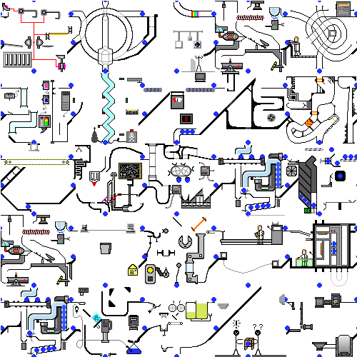
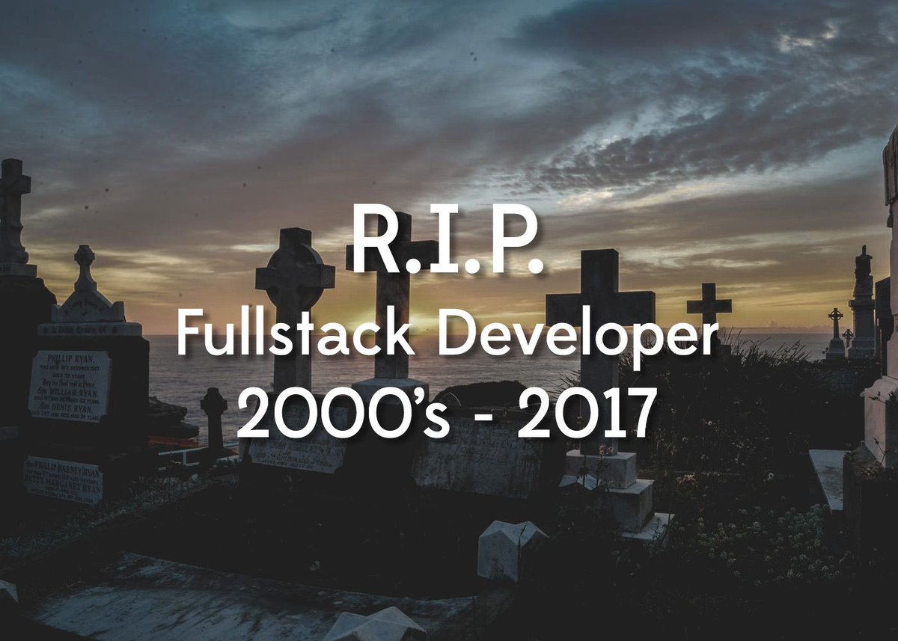
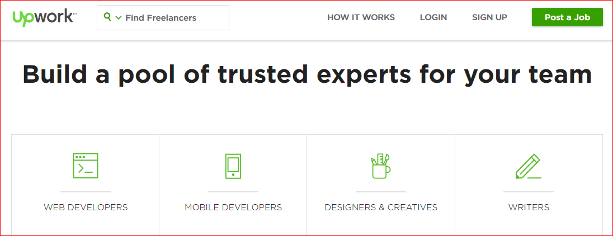

Summary and conclusion


Some of the Back end can be off shored. Some is an API.

Mint idea: enter banking info.
Found that if UI is nice, users would
Extreme cloud, know your TCO


Engaging UI

Can you make your app ....

Rapid development


Simplify
Reduce resource for back end

Do you need fullstack 3GL staff?
Does 3GL add business value? or detract.

We used to sell accounting software: By running it, a company could fire some book keepers. The value.
Meta = by using this approach - you can manage costs.
A software development manager Excel example on head count/staffing/resources:
- Server-less + API = ~40% to 60% staffing AND resource cut
- 4GL Declarative programing = ~ 2X to 10X productivity increase
- Build server/build engineer = force multiplier. 2 to 3 FTE savings
- Polyglot staff = increased retention, 10% to 20% productivity due to domain knowledge
- Intercept/Observer = 2X savings - due to building the right thing sooner.
- 50% smaller engineering budget = more money to marketing/lead gen
- WebIDE = 15% to 25% improved on IDE stability and remote support.
- Focus on Front End = being in the zone more, less context switching.
- Measure a before vs after, or A/B test By Meta, we mean be aware.
There is a glut of developers. 90% are not productive. We will be left with good ones. A bit like sales, 10% of Sale people sell 90%. If you cut sales staff by 90% - you lose 10% of sales and 90% of cost. And there are 3 kinds: Worth their salary. Not worth their salary. And a 3rd kind: that make others have low productivity, worth paying them to work at a competitor.
Staff you should reduce/outsource going forward:
- IOS developers
- Android developers
- Full stack|back end developers
- Photoshop guy/gal "We decided to go in a different direction, we can use consulting in a transition"
Staff (you do need):
- Designer that codes, that is ideal, may cost more. Or a Front end developers that knows design. CSS interview. Polyglot FE (Front end frameworks)
- Build/release engineer(can be out sourced)
- Content Producer/Editor/Writer
Meta is disruptive - in the full meaning of the word. Disruptive that 3gl is different from 4GL. Things that worked in 3GL don't apply. Like manually managing memory in Java for people coming to C. Feel like it needs to be there - it does not. Ex: Flux is a 3gl technique. In Meta, inside the tag you do you api calls.
Sin list:
- Avoid 3 GL / Procedural / Algol = eschew js
- Avoid Full stack developers: They don't know CSS.
- Avoid resume based development
- No full stack: Convergence of dev and designer
- Rapid prototype / Prototype -> UX. So evaluate need for 'PDF' prototypes, like PhotoShop. You should count on your RAD. Instead look at User Stories plus Intercept/Observe.
- Developers that love to code can be harmful.
- Avoid FTP. Mount (and cache). Reduce Git - you don't put your DB in git, just back up.
- Less git. More content DB back up.
- JSX. Takes declarative lang into procedural.
- No LAM(+P)
- Front end team separate from native mobile team.
- There are developers detached from customer or from business value
Question: you are conducting an interview a candidate, they know CSS Frameworks, passed an oral exam (ex: When to use Absolute). Please estimate time to write back end and middleware REST API service + User auth(join/password reset, etc) for 6 pages/screens. With ORM, cache, secured edge distributed servers, CORS. Assume 5 api calls per page/screen. Estimate how long that would take you?
- Meta developer answer: 0 time.
A developer boasts: we can make this faster!
- Mgr: What is the time Bob our customer has now, vs what will they see after? Avoid these tests that if a button is clicked 1000 times, the loop is 10ms faster. Some developers are just not self aware and can't be helped - until their next job. Tie it to the customer - this is why you involve devs in Intercept/Observe.
Also, I am big fan of quarterly bonus. ~20% of comp should be quarterly based on goals. S.M.A.R.T. or better OKR.
Alibaba: 2 people that do work of 4 and get paid for 3.
Project management tip on delays:
- Start w/ how many days per page/screen.
- Let say answer is 2 weeks to do all '8'.
- On due day - I need an extra week. :-). That is sunk cost.
- What do you do as SD manager?
- Hint: Mythical Man Month.
Increase on demand.
Meta® with Docker admin, give you 10X better web app development productivity. For example, when we went from 2nd GL to 3GL. It includes an admin/build server, selected tech stack and a recommended software development management methodology. So work of 5 devs in 6 months can be done by 2 devs in 3 weeks.
How 10X? Here are the tenants of the confident Meta® software development manager:
- Pug, RIOTjs as 4GL: Declarative. Eschew 3GL.
- Extreme serveries as the 'next' cloud. Reduced full stack developers. Plus productivity due to focus
- Select a CSS FE framework
- SPA = reduced Swift/Andorid developers.
- Docker Admin / Build server as force multiplier.
- Mount (vs FTP). Fast deployment is live deployment. Move fast and break things.
- WebIDE + Remove friendly. Team player, poor, broken dev env. Reduce turnover, but plan on it.
- Intercept/Observe and UX culture
- Meta is a build server, but also how you think about web app development and productivity.
PHP creator hated to code. Now LAMP, ex: WordPress have 40% share of WWW.
Our Goal: Deliver 10 X faster software development. We leverage curated list of tech and technique. For example one of about 10 of them is: we reposition Pug as 4GL declarative language.
For comparison LAMP, the technology WordPress was built on. Every 10 years or so tech gets 10 times better FORCING everyone to upgrade. Assembly was 10 times better than machine language. C is 10 times better than Assembly. We believe that we found the answer on how to have a more productive software development team.
So far, somehow, SSR LAMP has dominated web deployments, with WP having some 30% of WWW - time to start displacing that. But there are staticlly generated CMS approaches trying to get at them.
The extra power of nbake can be used to 'tell the story better', by being more interactive in your UX. Experience shows that better UX translates to more user engaged and higher user retention.
As a starting point, we assume that everyone is web literate, for example: ' Design and Build Websites ' by Jon Duckett We also assume that you will learn Pug.
Meta® Logo- is a monkey using a box to reach something: You should use a build server.
One last thing: Goal: 10 X faster than today's development. Did we get there?
Meta software development manager's Quiz/Crossword w/ answer key:
- Dev includes (Intercept/Observer) to get insight and alignment.
- A team player uses shared docker and (WebIDE)
- You should use flat file as static DB via generated JSON and/or client-side-only (FireStore) for auth and dynamic data store - similar to how Mobile Aps Work.
- Mobile apps with same code require that you Web app be (SPA) via App Shell.
- Developers are measured in number of pages (per day)
- Front end code is (disposable) layer, it gets redone from time to time.
- As a manager I have a (productivity) goal
Free Meta T-Shirt to first person to finish cross word puzzle.
Meta® with Docker admin, give you 10X better web app development productivity. For example, when we went from 2nd GL to 3GL. It includes an admin/build server, selected tech stack and a recommended software development management methodology. So work of 5 devs in 6 months can be done by 2 devs in 3 weeks.
I heard you like 3 tier:
- CDN/FTP/S3 HTTP Host
- A host for Docker build server in the cloud
- Fire store
How to get started:
Manager will create the above 3 accounts.
Manager will facilitate user|feature stories.
- Manager will monitor developer productivity, ex: # of pages per day/week.
- Manager will putting people in positions to succeed. For example, a full stack developer does not have sufficient CSS experience = can't do front end dev.
- Web design agency willing to use Pug, FireBase
- Meta methodology includes Intercept/Observe. At least show how much you care before you show how much you know.
Other:
- Take Train the Trainer online class
- Leverage/extend our Admin/build Docker.